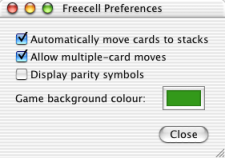

Ayuda de Freecell
Ayuda de Freecell
Configuración
Existen dos opciones disponibles en la configuración de freecell que permiten hacer el juego mas facíl.

-
Automáticamente mover hacia casa
-
Con esta opción activada, las cartas que no son necesarias para el juego se regresan a casa cuando sea posible.
Los Ases siempre se van a casa, y las otras cartas se van a casa si no son necesarias en un futuro.
- Permitir movidas múltiples
-
Esta opcion hace que puedas hacer movidas multiples de cartas de columna a columna usando dos click solamente.
Se pueden mover las cartas una por una manualmente, pero esta opcion te ahorra trabajo.